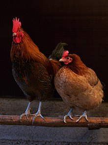
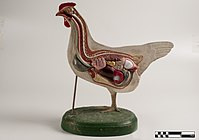
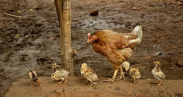
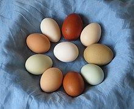
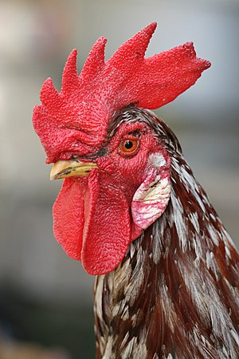
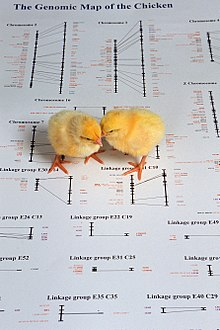

From Wikipedia, the free encyclopedia
For the culinary use of chickens, see Chicken as food. For other uses, see Chicken (disambiguation) and Chooks (disambiguation). "Rooster" and "Roosters" redirect here. For other uses, see Rooster (disambiguation). "Cockerel" redirects here. For the Fabergé egg, see Cockerel (Fabergé egg).
The chicken (Gallus gallus domesticus) is a domesticated junglefowl species, with attributes of wild species such as the grey and the Ceylon junglefowl[1] that are originally from Southeastern Asia. Rooster or cock is a term for an adult male bird, and a younger male may be called a cockerel. A male that has been castrated is a capon. An adult female bird is called a hen and a sexually immature female is called a pullet. Originally raised for cockfighting or for special ceremonies, chickens were not kept for food until the Hellenistic period (4th–2nd centuries BC).[2][3] Humans now keep chickens primarily as a source of food (consuming both their meat and eggs) and as pets. Chickens are one of the most common and widespread domestic animals, with a total population of 23.7 billion as of 2018,[4] up from more than 19 billion in 2011.[5] There are more chickens in the world than any other bird.[5] There are numerous cultural references to chickens – in myth, folklore and religion, and in language and literature. Genetic studies have pointed to multiple maternal origins in South Asia, Southeast Asia, and East Asia,[6] but the clade found in the Americas, Europe, the Middle East and Africa originated from the Indian subcontinent. From ancient India, the chicken spread to Lydia in western Asia Minor, and to Greece by the 5th century BC.[7] Fowl have been known in Egypt since the mid-15th century BC, with the "bird that gives birth every day" having come from the land between Syria and Shinar, Babylonia, according to the annals of Thutmose III.[8][9][10]
An adult male is a called a cock or (in the United States) a rooster and an adult female is called a hen.[11][12] Other terms are:
Chicken was originally a term only for an immature, or at least young, bird.[when?] In older sources, chicken as a species were typically referred to as common fowl or domestic fowl.[22][page needed][failed verification] Chicken may also mean a chick (see for example Hen and Chicken Islands).[23]
According to Merriam-Webster, the term rooster (i.e. a roosting bird) originated in the mid- or late 18th century as a euphemism to avoid the sexual connotation of the original English cock,[24][25][26] and is widely used throughout North America. Roosting is the action of perching aloft to sleep at night.[27]
In most breeds the adult rooster can be distinguished from the hen by his larger comb. Comb of a hen. Chickens are omnivores.[28] In the wild, they often scratch at the soil to search for seeds, insects, and even animals as large as lizards, small snakes,[29] or sometimes young mice.[30] The average chicken may live for 5–10 years, depending on the breed.[31] The world's oldest known chicken lived 16 years according to Guinness World Records.[32]
Anatomy of a chicken.  Diagram of a chicken skull.Eggs from different breeds Roosters can usually be differentiated from hens by their striking plumage of long flowing tails and shiny, pointed feathers on their necks ('hackles') and backs ('saddle'), which are typically of brighter, bolder colours than those of females of the same breed. However, in some breeds, such as the Sebright chicken, the rooster has only slightly pointed neck feathers, the same colour as the hen's. The identification can be made by looking at the comb, or eventually from the development of spurs on the male's legs (in a few breeds and in certain hybrids, the male and female chicks may be differentiated by colour). Adult chickens have a fleshy crest on their heads called a comb, or cockscomb, and hanging flaps of skin either side under their beaks called wattles. Collectively, these and other fleshy protuberances on the head and throat are called caruncles. Both the adult male and female have wattles and combs, but in most breeds these are more prominent in males. A 'muff' or 'beard' is a mutation found in several chicken breeds which causes extra feathering under the chicken's face, giving the appearance of a beard.[33] Domestic chickens are not capable of long-distance flight, although lighter chickens are generally capable of flying for short distances, such as over fences or into trees (where they would naturally roost). Chickens may occasionally fly briefly to explore their surroundings, but generally do so only to flee perceived danger.
Chickens are gregarious birds and live together in flocks. They have a communal approach to the incubation of eggs and raising of young. Individual chickens in a flock will dominate others, establishing a 'pecking order', with dominant individuals having priority for food access and nesting locations. Removing hens or roosters from a flock causes a temporary disruption to this social order until a new pecking order is established. Adding hens, especially younger birds, to an existing flock can lead to fighting and injury.[34]
When a rooster finds food, he may call other chickens to eat first. He does this by clucking in a high pitch as well as picking up and dropping the food. This behaviour may also be observed in mother hens to call their chicks and encourage them to eat. A rooster's crowing is a loud and sometimes shrill call and sends a territorial signal to other roosters.[35] However, roosters may also crow in response to sudden disturbances within their surroundings. Hens cluck loudly after laying an egg, and also to call their chicks. Chickens also give different warning calls when they sense a predator approaching from the air or on the ground.[36]
"Cockadoodledoo" and "Cocka-doodle-doo" redirect here. For the nursery rhyme, see Cock a doodle doo. Roosters almost always start crowing before four months of age. Although it is possible for a hen to crow as well, crowing (together with hackles development) is one of the clearest signs of being a rooster.[37]
Rooster crowing contests, also known as crowing contests, are a traditional sport in several countries, such as Germany, the Netherlands, Belgium,[38] the United States, Indonesia and Japan. The oldest contests are held with longcrowers. Depending on the breed, either the duration of the crowing or the times the rooster crows within a certain time is measured.
To initiate courting, some roosters may dance in a circle around or near a hen (a 'circle dance'), often lowering the wing which is closest to the hen.[39] The dance triggers a response in the hen[39] and when she responds to his 'call', the rooster may mount the hen and proceed with the mating. More specifically, mating typically involves the following sequence:
Chicken eggs vary in colour depending on the breed, and sometimes, the hen, typically ranging from bright white to shades of brown and even blue, green, light pinkish and recently reported purple (found in South Asia) (Araucana varieties). Chicks before their first outing Hens will often try to lay in nests that already contain eggs and have been known to move eggs from neighbouring nests into their own. The result of this behaviour is that a flock will use only a few preferred locations, rather than having a different nest for every bird. Hens will often express a preference to lay in the same location. It is not unknown for two (or more) hens to try to share the same nest at the same time. If the nest is small, or one of the hens is particularly determined, this may result in chickens trying to lay on top of each other. There is evidence that individual hens prefer to be either solitary or gregarious nesters.[41]
This section needs additional citations for verification. Please help improve this article by adding citations to reliable sources. Unsourced material may be challenged and removed. (June 2021) (Learn how and when to remove this template message) Under natural conditions, most birds lay only until a clutch is complete, and they will then incubate all the eggs. Hens are then said to "go broody". The broody hen will stop laying and instead will focus on the incubation of the eggs (a full clutch is usually about 12 eggs). She will sit or 'set' on the nest, fluffing up or pecking in defense if disturbed or removed. The hen will rarely leave the nest to eat, drink, or dust-bathe.[42] While brooding, the hen maintains the nest at a constant temperature and humidity, as well as turning the eggs regularly during the first part of the incubation. To stimulate broodiness, owners may place several artificial eggs in the nest. To discourage it, they may place the hen in an elevated cage with an open wire floor. Skull of a three-week-old chicken. Here the opisthotic bone appears in the occipital region, as in the adult Chelonian. bo = Basi-occipital, bt = Basi-temporal, eo = Opisthotic, f = Frontal, fm = Foramen magnum, fo = Fontanella, oc = Occipital condyle, op = Opisthotic, p = Parietal, pf = Post-frontal, sc = Sinus canal in supra-occipital, so = Supra-occpital, sq = Squamosal, 8 = Exit of vagus nerve. Breeds artificially developed for egg production rarely go broody, and those that do often stop part-way through the incubation. However, other breeds, such as the Cochin, Cornish and Silkie, do regularly go broody, and make excellent mothers, not only for chicken eggs but also for those of other species — even those with much smaller or larger eggs and different incubation periods, such as quail, pheasants, ducks, turkeys, or geese.
Fertile chicken eggs hatch at the end of the incubation period, about 21 days.[39] Development of the chick starts only when incubation begins, so all chicks hatch within a day or two of each other, despite perhaps being laid over a period of two weeks or so. Before hatching, the hen can hear the chicks peeping inside the eggs, and will gently cluck to stimulate them to break out of their shells. The chick begins by 'pipping'; pecking a breathing hole with its egg tooth towards the blunt end of the egg, usually on the upper side. The chick then rests for some hours, absorbing the remaining egg yolk and withdrawing the blood supply from the membrane beneath the shell (used earlier for breathing through the shell). The chick then enlarges the hole, gradually turning round as it goes, and eventually severing the blunt end of the shell completely to make a lid. The chick crawls out of the remaining shell, and the wet down dries out in the warmth of the nest. Hens usually remain on the nest for about two days after the first chick hatches, and during this time the newly hatched chicks feed by absorbing the internal yolk sac. Some breeds sometimes start eating cracked eggs, which can become habitual.[43] Hens fiercely guard their chicks, and brood them when necessary to keep them warm, at first often returning to the nest at night. She leads them to food and water and will call them toward edible items, but seldom feeds them directly. She continues to care for them until they are several weeks old.
Chickens may occasionally gang up on a weak or inexperienced predator. At least one credible report exists of a young fox killed by hens.[44][45][46] A group of hens have been recorded in attacking a hawk that had entered their coop.[47] If a chicken is threatened by predators, stress, or is sick, there is a chance that they will puff up their feathers.[42]
Sperm transfer occurs by cloacal contact between the male and female, in a maneuver known as the 'cloacal kiss'.[48] As with birds in general, reproduction is controlled by a neuroendocrine system, the Gonadotropin-Releasing Hormone-I neurons in the hypothalamus. Locally to the reproductive system itself, reproductive hormones such as estrogen, progesterone, gonadotropins (luteinizing hormone and follicle-stimulating hormone) initiate and maintain sexual maturation changes. Over time there is reproductive decline, thought to be due to GnRH-I-N decline. Because there is significant inter-individual variability in egg-producing duration, it is believed to be possible to breed for further extended useful lifetime in egg-layers.[49]
Chicken embryos have long been used as model organisms to study developing embryos. Large numbers of embryos can be provided by commercial chicken farmers who sell fertilized eggs which can be easily opened and used to observe the developing embryo. Equally important, embryologists can carry out experiments on such embryos, close the egg again and study the effect later on. For instance, many important discoveries in the area of limb development have been made using chicken embryos, such as the discovery of the apical ectodermal ridge (AER) and the zone of polarizing activity (ZPA) by John W. Saunders.[50] In 2006, scientists researching the ancestry of birds "turned on" a chicken recessive gene, talpid2, and found that the embryo jaws initiated formation of teeth, like those found in ancient bird fossils. John Fallon, the overseer of the project, stated that chickens have "...retained the ability to make teeth, under certain conditions... ."[51] Chicks atop a picture of a genetic map of a chicken. The chicken genome has 39 pairs of chromosomes, whereas the human genome contains 23 pairs
Given its eminent role in farming, meat production, but also research, the house chicken was the first bird genome to be sequenced.[52] At 1.21 Gb, the chicken genome is considerably smaller than other vertebrate genomes, such as the human genome (3 Gb). The final gene set contained 26,640 genes (including noncoding genes and pseudogenes), with a total of 19,119 protein-coding genes in annotation release 103 (2017), a similar number of protein-coding genes as in the human genome.[53]
Populations of chickens from high altitude regions like Tibet have special physiological adaptations that result in a higher hatching rate in low oxygen environments. When eggs are placed in a hypoxic environment, chicken embryos from these populations express much more hemoglobin than embryos from other chicken populations. This hemoglobin also has a greater affinity for oxygen, allowing hemoglobin to bind to oxygen more readily.[54][55] Pinopsins were originally discovered in the chicken pineal gland.[56]
Although all avians appear to have lost TLR9, artificial immunity against bacterial pathogens has been induced in neonatal chicks by Taghavi et al 2008 using tailored oligodeoxynucleotides.[57]
